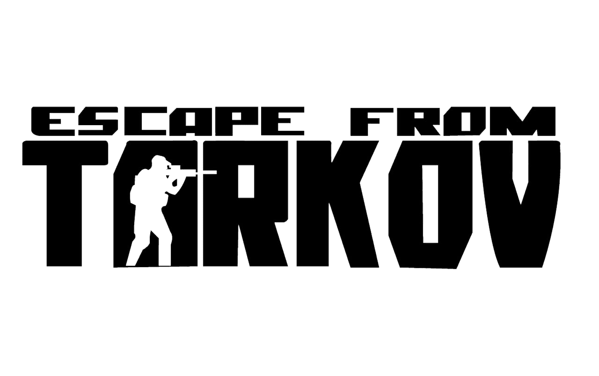

In this website, I will be describing the mechanics and features of Escape From Tarkov. This is an extraction shooter game. I will not be covering the gun aspect in this website. Disclamer: This game is not for the weakminded. This game drops you into the middle of this "warzone", Tarkov, with very minimal guidance, if any. You are expected to pick up the neuances of this game as you play. This can prove to be quite difficult with how harsh the gameplay is. The game is very unforgiving and can be quite frustrating at times. However, if you are willing to put in the time and effort, this game can be very rewarding. If this sounds like a game you want to tackle, you can find their website here: Escape From Tarkov
Escape From Tarkov offers a unique and challenging gameplay experience with its realistic physics, complex loot system, quests, and intense combat mechanics. These work together to create your experience in Tarkov. These features are what make this game so unique and enjoyable. The game is constantly being updated with new content and features, which keeps the game fresh and exciting. This website will cover these features and explain in more detail how they work. As stated, I will not cover the weapon mechanics in this website.